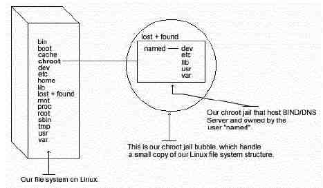

L
i n u x P a r
k
при
поддержке ВебКлуба |
Глава 14 Серверное программное обеспечение (BIND/Сервис DNS)
(Часть2)В этой главе
Linux DNS и
BIND сервер
Конфигурации
Кэширующий
DNS-сервер
Основной
сервер имен
Вторичный
сервер имен
Организация
защиты ISC BIND/DNS
Административные
средства DNS
Утилиты
пользователя DNS
|
 |
Запуск ISC BIND/DNS в chroot окружении.
Эта часть фокусируется на предотвращении использования ISC
BIND/DNS, как точки прерывания для доступа к системе. Так как ISC BIND/DNS
выполняет относительно большую и комплексную функцию, вероятность возникновения
ошибки, затрагивающей защиту, высока. Фактически, в прошлом имелись дефекты,
которые позволяли удаленному пользователю получить root доступ к серверу с
запущенным BIND.
Чтобы минимизировать риск, ISC BIND/DNS может быть запущен как
не root пользователь, который сможет нанести повреждения, как нормальный
пользователь с локальным shell. Конечно, этого не достаточно для обеспечения
безопасности большинства DNS серверов, поэтому может быть предпринят
дополнительный шаг – запуск ISC BIND в chroot заключении.
Основная выгода chroot состоит в том, что в результате
ограничивается часть файловой системы, которую DNS демон может видеть, корневым
каталогом “окружения”. Так как “окружение” создается только для поддержки DNS,
число программ связанных с ISC BIND/DNS и доступных в этой части файловой
системы чрезвычайно ограничено. Наиболее важно то, что здесь отпадает
необходимость в setuid-root программах, которые могут быть использованы для
получения root доступа и взлома “окружения”.

ЗАМЕЧАНИЕ: Исполняемая программа “named” должна
располагаться в каталоге, описанном в переменной PATH. В этом документе, я буду
считать, что путь к named будет “/usr/sbin/named”.
Для запуска ISC BIND/DNS в chroot “окружении” необходимо
сделать слеующие шаги:
Шаг 1
Мы должны найти совместно-используемые библиотеки от которых
зависит named (named – это DNS демон). Их будет нужно позже скопировать в chroot
“окружение”.
Для поиска подобных библиотек используйте следующую
команду:
[root@deep /]# ldd
/usr/sbin/named
libc.so.6 => /lib/libc.so.6
(0x40017000)
/lib/ld-linux.so.2 => /lib/ld-linux.so.2
(0x40000000)
Сделайте себе соответствующую отметку, чтобы можно было
использовать ее позже на следующих шагах.
Шаг 2
Сейчас мы должны определить chroot окружение и создавать
корневой каталог для него. Мы выбрали каталог “/chroot/named”, потому что хотим
разместить ее на независимом разделе, чтобы предотвратить атаки на файловую
систему. Раньше, во время инсталляции Linux мы создали раздел “/chroot”
специально предназначенный для этого.
[root@deep
/]# /etc/rc.d/init.d/named stop (требуется ввести только если
сещуствующий named демон запущен)
Shutting down
named: [ OK ]
[root@deep /]# mkdir -p /chroot/namedЗатем, создаем
остальные каталоги:
[root@deep /]# mkdir
/chroot/named/dev
[root@deep /]# mkdir /chroot/named/lib
[root@deep /]#
mkdir /chroot/named/etc
[root@deep /]# mkdir -p
/chroot/named/usr/sbin
[root@deep /]# mkdir -p
/chroot/named/var/run
[root@deep /]# mkdir /chroot/named/var/named
Сейчас копируем основные конфигурационные файлы, файлы с
описаниями зон, программы named named-xfer в необходимые места:
[root@deep /]# cp /etc/named.conf
/chroot/named/etc/
[root@deep /]# cd /var/named ; cp -a .
/chroot/named/var/named/
[root@deep /]# mknod /chroot/named/dev/null c 1
3
[root@deep /]# chmod 666 /chroot/named/dev/null
[root@deep /]# cp
/usr/sbin/named /chroot/named/usr/sbin/
[root@deep /]# cp
/usr/sbin/named-xfer /chroot/named/usr/sbin/
ВАЖНОЕ ЗАМЕЧАНИЕ. Для подчиненного сервера имен
владельцем каталога “/chroot/named/var/named” и всех файлов расположенных в нем
должен быть процесс с “named”, иначе вы не сможете осуществить пересылку зоны.
Чтобы сделать на подчиненном сервере владельцем каталога “named” и всех файлов
лежащих в нем пользователя “named” используйте следующую команду:
[root@deep /]# chown -R named.named
/chroot/named/var/named/
Шаг 3
Копируйте разделяемые библиотеки определенные на шаге 1 в
chroot каталог lib:
[root@deep /]# cp
/lib/libc.so.6 /chroot/named/lib/
[root@deep /]# cp /lib/ld-linux.so.2
/chroot/named/lib/
Шаг 4
Копируйте файлы “localtime” и “nsswitch.conf” в chroot каталог
etc, чтобы элементы файлов регистрации были правильно установлены для вашей
временной зоны:
[root@deep /]# cp /etc/localtime
/chroot/named/etc/
[root@deep /]# cp /etc/nsswitch.conf
/chroot/named/etc/
Шаг 5
Для большей безопасности на некоторые файлы из каталога
“/chroot/named/etc” мы должны установить бит постоянства:
[root@deep /]# cd /chroot/named/etc/
[root@deep etc]# chattr +i
nsswitch.conf
[root@deep /]# cd /chroot/named/etc/
[root@deep etc]# chattr
+i named.conf
Файл с атрибутом “+i” не может быть модифицирован, удален или
переименован; к нему не может быть создана ссылка и никакие данные не могут быть
записаны в него. Только суперпользователь может установить или снять этот
атрибут.
Шаг 6
Добавьте новый UID и новый GID для запуска демона “named”, если
они еще не определены. Это важно, так как запуск его как root нарушит правильное
функционирование “окружения”, а использование существующих пользовательских id
позволит вашему сервису получить доступ к другим ресурсам.
Проверьте файлы “/etc/passwd” и “/etc/group” на наличие
свободных UID/GID. В нашем примере, мы используем номер “53” и имя
“named”.
[root@deep /]# useradd -c “DNS Server”
-u 53 -s /bin/false -r -d /chroot/named named 2>/dev/null || :
Шаг 7
Мы должны сказать syslogd (демону системы syslog) о новом
chrooted сервисе: Обычно, процессы обращаются к syslogd через “/dev/log”.
chroot-овое “окружение”, этого сделать не сможет, поэтому syslogd необходимо
объяснить, что нужно слушать “/chroot/named/dev/log” вместо принятого по
умолчанию “dev/log”. Чтобы сделать это, нужно редактировать скрипт запуска
syslog.
Редактируйте скрипт syslog (vi +24 /etc/rc.d/init.d/syslog) и
измените следующую строку:
daemon syslogd -m
0
Должна читаться как:
daemon syslogd
-m 0 -a /chroot/named/dev/log
Шаг 8
Скрипт для запуска ISC BIND/DNS по умолчанию настроен для
запуска его вне chroot “окружения”. Мы должны внести следующие изменения в файл
named (vi /etc/rc.d/init.d/named), чтобы исправить это:
[ -f /usr/sbin/named ] || exit
0
Должна читаться:
[ -f
/chroot/named/usr/sbin/named ] || exit 0
[ -f /etc/named.conf ] || exit
0
Должна читаться:
[ -f
/chroot/named/etc/named.conf ] || exit 0
daemon named
Должна
читаться:
daemon /chroot/named/usr/sbin/named -t
/chroot/named/ -unamed -gnamed
Опция “-t” говорит “named” запускаться, используя новое chroot
окружение.
Опция “-u” определяет пользователя от имени которого стартует
named.
Опция “-g” определяет группу от имени которой стартует named.
Шаг 9
В BIND 8.2, команда “ndc” стала двоичным файлом (ранее, это был
скрипт), которая в этой конфигурации не работает. Чтобы исправить это, пакет ISC
BIND/DNS должен быть скомпилирован из исходных кодов.
[root@deep /]# cp bind-src.tar.gz /vat/tmp
[root@deep /]# cd
/var/tmp/
[root@deep tmp]# tar xzpf bind-src.tar.gz
[root@deep tmp]# cd
src
[root@deep src]# cp port/linux/Makefile.set
port/linux/Makefile.set-orig
Редактируем файл Makefile.set (vi port/linux/Makefile.set) и
делаем в нем следующие изменения:
'CC=egcs
-D_GNU_SOURCE'
'CDEBUG=-O9 -funroll-loops -ffast-math -malign-double
-mcpu=pentiumpro -march=pentiumpro -fomit-frame-pointer -fno-exceptions
-g’
'DESTBIN=/usr/bin'
'DESTSBIN=/chroot/named/usr/sbin'
'DESTEXEC=/chroot/named/usr/sbin'
'DESTMAN=/usr/man'
'DESTHELP=/usr/lib'
'DESTETC=/etc'
'DESTRUN=/chroot/named/var/run'
'DESTLIB=/usr/lib/bind/lib'
'DESTINC=/usr/lib/bind/include'
'LEX=flex
-8 -I'
'YACC=yacc
-d'
'SYSLIBS=-lfl'
'INSTALL=install'
'MANDIR=man'
'MANROFF=cat'
'CATEXT=$$N'
'PS=ps
p'
'AR=ar crus'
'RANLIB=:'
Различие между Makefile, который мы использовали прежде и
новым, заключается в изменении строк “DESTSBIN=”, “DESTEXEC=” и “DESTRUN=”. В
них мы задаем новое месторасположение файлов и теперь программа “ndc” будет
знать, где находится “named”.
[root@deep src]#
make clean
[root@deep src]# make
[root@deep src]# cp bin/ndc/ndc
/usr/sbin/
[root@deep src]# cp: overwrite `/usr/sbin/ndc’? y
[root@deep
src]# strip /usr/sbin/ndc
Мы создали двоичный файл, а затем копируем полученную программу
“ndc” в “/usr/sbin”, переписывая старую. Мы не должны забыть выполнить команду
strip для улучшения производительности.
Шаг 10
Также хорошей идеей будет создание новых двоичных файлов
“named” и “named-xfer”, чтобы грантировано использовать одну и туже версию
“named” и “ndc”.
Для named:
[root@deep /]# cd
/var/tmp/src
[root@deep src]# cp port/linux/Makefile.set-orig
port/linux/Makefile.set
[root@deep src]# cp: overwrite
`port/linux/Makefile.set’? y
Редактируйте файл Makefile.set (vi port/linux/Makefile.set) и
внесите в него следующие изменения:
'CC=egcs
-D_GNU_SOURCE'
'CDEBUG=-O9 -funroll-loops -ffast-math -malign-double
-mcpu=pentiumpro -march=pentiumpro -fomit-frame-pointer -fno-exceptions
-g’
'DESTBIN=/usr/bin'
'DESTSBIN=/usr/sbin'
'DESTEXEC=/usr/sbin'
'DESTMAN=/usr/man'
'DESTHELP=/usr/lib'
'DESTETC=/etc'
'DESTRUN=/var/run'
'DESTLIB=/usr/lib/bind/lib'
'DESTINC=/usr/lib/bind/include'
'LEX=flex
-8 -I'
'YACC=yacc
-d'
'SYSLIBS=-lfl'
'INSTALL=install'
'MANDIR=man'
'MANROFF=cat'
'CATEXT=$$N'
'PS=ps
p'
'AR=ar crus'
'RANLIB=:'
[root@deep src]# rm -f
.settings
[root@deep src]# make clean
[root@deep src]# make
[root@deep
src]# cp bin/named/named /chroot/named/usr/sbin
[root@deep src]# cp:
overwrite `/chroot/named/usr/sbin/named’? y
[root@deep src]# cp
bin/named-xfer/named-xfer /chroot/named/usr/sbin
[root@deep src]# cp:
overwrite `/chroot/named/usr/sbin/named-xfer’? y
[root@deep src]# strip
/chroot/named/usr/sbin/named
[root@deep src]# strip
/chroot/named/usr/sbin/named-xfer
Мы удалили файл “.settings”, так как система кэширует в нем
переменные и выполнили команду “make clean”, чтобы убедиться, что у нас не
возникнут старые наложения. После того, как создан файл “named”, мы копируем его
вместе с “named-xfer” в chroot каталог и используем команду “strip” для
улучшения производительности новых исполняемых файлов.
Step 11
Удаление ненужных файлов и каталогов.
[root@deep /]# rm -f /usr/sbin/named
[root@deep /]# rm -f
/usr/sbin/named-xfer
[root@deep /]# rm -f /etc/named.conf
[root@deep /]#
rm -rf /var/named/
Мы удаляем “named” и “named-xfer” из “/usr/sbin”, так как они
будут теперь запускаться из chroot каталога. Тоже самое проделываем и для файла
“named.conf” и каталога “/var/named”.
Шаг 12
Мы должны тестировать новую chroot-овую конфигурацию ISC
BIND/DNS.
Первое, перезапустите ваш syslogd демон:
[root@deep /]# /etc/rc.d/init.d/syslog restart
Shutting down kernel logger: [ OK ]
Shutting down system logger: [ OK ]
Starting system logger: [ OK ]
Starting kernel logger: [ OK ]
Теперь можно запустить chroot версию ISC BIND/DNS:
[root@deep /]# /etc/rc.d/init.d/named start
Starting named: [ OK ]
Проверяем, что ISC BIND/DNS запущен от имени пользователя
“named” с новыми аргументами:
[root@deep /]# ps
auxw | grep named
named 11446 0.0 1.2 2444 1580 ? S 23:09 0:00
/chroot/named/usr/sbin/named -t /chroot/named/ -u named –g named
Первая колонка говорит, что программа запущена с UID “named”.
Конец строки должен содержать “named -t /chroot/named/ -u named –g named”,
представляющие из себя новые аргументы.
Очистка после работы
[root@deep /]# rm -rf /var/tmp/src bind-src.tar.gz
Эта команда перемещает исходные файлы и tar архив, которые мы
использовали при компиляции и инсталляции ISC BIND/DNS.
Дополнительная документация
Для получения большей информации вы можете читать следующие
страницы руководства:
$ man dnsdomainname (1) – показывает доменное имя системы
$
man dnskeygen (1) – создает публичный, приватный и разделяемый секретные ключи
для DNS Security
$ man dnsquery (1) – запрос доменного имени, используя
распознаватель (resolver)
$ man named (8) – сервер доменной службы имен
(DNS)
$ man hesiod_to_bind [hesiod] (3) – Интерфейсная библиотека к серверу
имен Hesiod
$ man ldconfig (8) – определяет связи времени выполнения
$ man
lesskey (1) – определяет ключ связанный с less
$ man raw (8) - привязывает
“сырые” символьные устройства Linux
$ man mkfifo (1) – создает FIFO (именные
каналы)
$ man named-bootconf (8) – конвертирует конфигурационный файл сервера
имен
$ man named-xfer (8) – вспомогательный агент для входящей зонной
пересылки
$ man named.conf [named] (5) – конфигурационный файл
$ man
Opcode (3) – Отключает opcode-ы named, когда компилируется perl код
$ man dig
(1) – посылает запросы к серверу имен
$ man nslookup (8) – создание
интерактивных запросов к серверу имен
$ man ndc (8) – программа
контролирующая работу сервера имен
Команды описанные ниже мы будем часто использовать, но на самом
деле их много больше, и вы должны изучить man-страницы и документацию для
получения деталей.
dig
Утилита “dig” (domain information groper) может быть
использована для обновления файла “db.cache”, который говорит вашему серверу
какие сервера отвечают за корневую зоны. Такие сервера изменяются чрезвычайно
редко. Хорошей идеей будет обновлять ваш файл каждые один-два месяца.
Используйте следующую команду для получения нового файла
db.cache:
[root@deep /]# dig @.aroot-servers.net
. ns > db.cache
Копируйте, полученный файл db.cache в каталог
/var/named/.
[root@deep /]# cp db.cache
/var/named/
Где @a.root-servers.net – это адрес root сервера у которого вы
спрашиваете о новой файле db.cache и db.cache – имя вашего нового db.cache
файла.
ndc
Утилита “ndc”, входящая в ISC BIND/DNS, позволяет системному
администратору из терминала интерактивно контролировать деятельность сервера
имен.
Наберите на вашем терминале ndc и затем help, чтобы увидеть
список доступных команд.
[root@deep /]#
ndc
Type help -or- /h if you need help.
ndc>
help
getpid
status
stop
exec
reload [zone] ...
reconfig (just
sees new/gone zones)
dumpdb
stats
trace
[level]
notrace
querylog
qrylog
help
quit
ndc>
/e
Команды описанные ниже мы будем часто использовать, но на самом
деле их много больше, и вы должны изучить man-страницы и документацию для
получения деталей.
nslookup
Программа nslookup позволяет пользователям интерактивно или не
интерактивно запрашивать сервера имен Интернет. В интерактивном режиме
пользователи могут запрашивать у серверов имен информацию о различных хостах и
доменах, печатать список хостов в домене. В не интерактивном режиме пользователь
может получить имена и запросить информацию о хостах и доменах.
Интерактивный режим имеет много опций и команд; рекомендуется
прочитать страницу руководства для nslookup или дать команду help в
интерактивном режиме.
Для запуска nslookup в интерактивном режиме используйте
команду:
[root@deep /]# nslookup
Default
Server: deep.openna.com
Address: 208.164.186.1
> help
$Id:
nslookup.help,v 8.4 1996/10/25 18:09:41 vixie Exp $
Команды: (идентификаторы представлены в верхнем регистре, что
делать не обязательно)
NAME – печатает информацию о хосте/домене NAME,
используя сервер по умолчанию
NAME1 NAME2 – то же, что и выше, но
используется сервер NAME2
help или
? – печатает информацию об
основных командах; смотрите nslookup(1) для деталей
set OPTION –
устанавливает опции
all – печатает опции, текущий сервер и
хост
[no]debug – печатает отладочную информацию
[no]d2 –
печатает полную отладочную информацию
Для запуска в не интерактивном режиме используйте
команду:
[root@deep /]# nslookup
www.redhat.com
Server: deep.openna.com
Address:
208.164.186.1
Non-authoritative answer:
Name:
www.portal.redhat.com
Addresses: 206.132.41.202, 206.132.41.203
Aliases:
www.redhat.com
Где <www.redhat.com> это имя или Интернет адрес о котором
вы хотите получить информацию.
dnsquery
Программа dnsquery запрашивает сервера имен через библиотеку
определителей.Для организации запроса на сервер имен, используя библиоткеку
определителей, введите следующую команду:
[root@deep /]# dnsquery <host>
Например:
[root@deep /]#
dnsquery www.redhat.com
;; ->>HEADER<<- opcode: QUERY, status:
NOERROR, id: 40803
;; flags: qr rd ra; QUERY: 1, ANSWER: 1, AUTHORITY: 4,
ADDITIONAL: 4
;; www.redhat.com, type = ANY, class = IN
www.redhat.com.
2h19m46s IN CNAME www.portal.redhat.com.
redhat.com. 2h18m13s IN NS
ns.redhat.com.
redhat.com. 2h18m13s IN NS ns2.redhat.com.
redhat.com.
2h18m13s IN NS ns3.redhat.com.
redhat.com. 2h18m13s IN NS
speedy.redhat.com.
ns.redhat.com. 1d2h18m8s IN A
207.175.42.153
ns2.redhat.com. 1d2h18m8s IN A
208.178.165.229
ns3.redhat.com. 1d2h18m8s IN A
206.132.41.213
speedy.redhat.com. 2h18m13s IN A 199.183.24.251
где <host> - имя хоста информацию о котором вы хотите
получить.
host
Программа host определяет имя хоста, используя DNS. Для
определения имен хоста используя сервер имен, введите следующую
команду:
[root@deep /]# host <FQDN, domain
names, host names, or host numbers>
Например:
[root@deep /]# host
redhat.com
redhat.com has address 207.175.42.154
где <FQDN, domain names, host names, or host numbers>
FDQN - полностью определенное имя домена (www.redhat.com), domain names –
доменное имя (redhat.com), host names - имя хоста (www) или host numbers - адрес
хоста (207.175.42.154).
Для поиска всей информации предоставляемой DNS о хосте
используйте команду:
[root@deep /]# host <-a
domain names >Например:
[root@deep
/]# host -a redhat.com
Trying null domain
rcode = 0 (Success),
ancount=6
The following answer is not authoritative:
The following answer
is not verified as authentic by the server:
redhat.com 8112 IN NS
ns.redhat.com
redhat.com 8112 IN NS ns2.redhat.com
redhat.com 8112 IN NS
ns3.redhat.com
redhat.com 8112 IN NS speedy.redhat.com
redhat.com 8112 IN
A 207.175.42.154
redhat.com 11891 IN SOA ns.redhat.com
noc.redhat.com(
2000021402 ;serial (version)
3600 ;refresh period
1800
;retry refresh this often
604800 ;expiration period
86400 ;minimum
TTL
)
For authoritative answers, see:
redhat.com 8112 IN NS
ns.redhat.com
redhat.com 8112 IN NS ns2.redhat.com
redhat.com 8112 IN NS
ns3.redhat.com
redhat.com 8112 IN NS speedy.redhat.com
Additional
information:
ns.redhat.com 94507 IN A 207.175.42.153
ns2.redhat.com 94507
IN A 208.178.165.229
ns3.redhat.com 94507 IN A
206.132.41.213
speedy.redhat.com 8112 IN A 199.183.24.251
Для получения полного описания домена используйте
команду:
[root@deep /]# host <-l domain names
>Например:
[root@deep /]# host -l
openna.com
openna.com name server deep.openna.com
openna.com name server
mail.openna.com
localhost.openna.com has address 127.0.0.1
deep.openna.com
has address 208.164.186.1
mail.openna.com has address
208.164.186.2
www.openna.com has address 208.164.186.3
Эта опция вызовет получение всех данных о зоне для доменного
имени “openna.com”. Подобная команды должна использоваться только если это
действительно необходимо.
Инсталлированные файлы.
> /etc/rc.d/init.d/named
> /etc/rc.d/rc0.d/K45named
> /etc/rc.d/rc1.d/K45named
> /etc/rc.d/rc2.d/K45named
> /etc/rc.d/rc3.d/K45named
> /etc/rc.d/rc4.d/K45named
> /etc/rc.d/rc5.d/K45named
> /etc/rc.d/rc6.d/K45named
> /etc/named.conf
> /usr/bin/addr
> /usr/bin/nslookup
> /usr/bin/dig
> /usr/bin/dnsquery
> /usr/bin/host
> /usr/bin/nsupdate
> /usr/bin/mkservdb
> /usr/lib/bind
> /usr/lib/bind/include/hesiod.h
> /usr/lib/bind/include/sys
> /usr/lib/bind/include/net
> /usr/lib/bind/lib
> /usr/lib/bind/lib/libbind.a
> /usr/lib/bind/lib/libbind_r.a
> /usr/lib/nslookup.help
> /usr/man/man1/dig.1
> /usr/man/man1/host.1
> /usr/man/man1/dnsquery.1
> /usr/man/man1/dnskeygen.1
> /usr/man/man3/hesiod.3
> /usr/man/man3/gethostbyname.3
> /usr/man/man3/inet_cidr.3
> /usr/man/man3/resolver.3
> /usr/man/man3/getnetent.3
> /usr/man/man3/tsig.3
> /usr/lib/bind/include
> /usr/lib/bind/include/arpa
> /usr/lib/bind/include/arpa/inet.h
> /usr/lib/bind/include/arpa/nameser.h
> /usr/lib/bind/include/arpa/nameser_compat.h
> /usr/lib/bind/include/isc
> /usr/lib/bind/include/isc/eventlib.h
> /usr/lib/bind/include/isc/misc.h
> /usr/lib/bind/include/isc/tree.h
> /usr/lib/bind/include/isc/logging.h
> /usr/lib/bind/include/isc/heap.h
> /usr/lib/bind/include/isc/memcluster.h
> /usr/lib/bind/include/isc/assertions.h
> /usr/lib/bind/include/isc/list.h
> /usr/lib/bind/include/isc/dst.h
> /usr/lib/bind/include/isc/irpmarshall.h
> /usr/lib/bind/include/netdb.h
> /usr/lib/bind/include/resolv.h
> /usr/lib/bind/include/res_update.h
> /usr/lib/bind/include/irs.h
> /usr/lib/bind/include/irp.h
> /usr/man/man3/getaddrinfo.3
> /usr/man/man3/getipnodebyname.3
> /usr/man/man5/resolver.5
> /usr/man/man5/irs.conf.5
> /usr/man/man5/named.conf.5
> /usr/man/man7/hostname.7
> /usr/man/man7/mailaddr.7
> /usr/man/man8/named.8
> /usr/man/man8/ndc.8
> /usr/man/man8/named-xfer.8
> /usr/man/man8/named-bootconf.8
> /usr/man/man8/nslookup.8
> /usr/man/man8/nsupdate.8
> /usr/sbin/ndc
> /usr/sbin/named
> /usr/sbin/named-xfer
> /usr/sbin/irpd
> /usr/sbin/dnskeygen
> /usr/sbin/named-bootconf
> /var/named